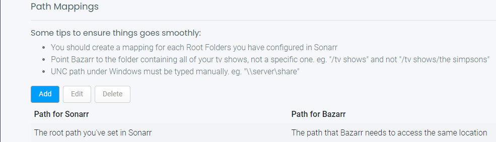
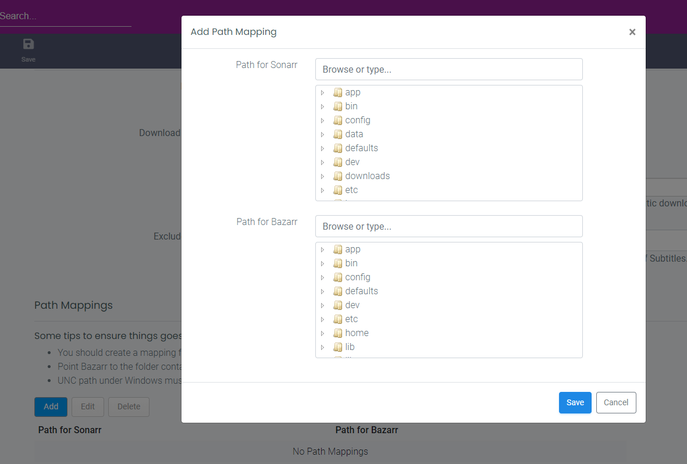
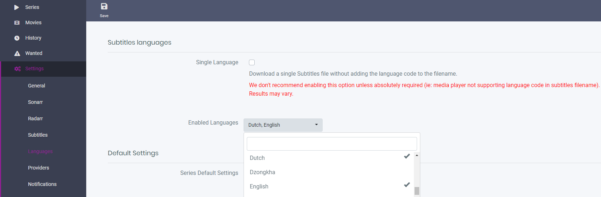
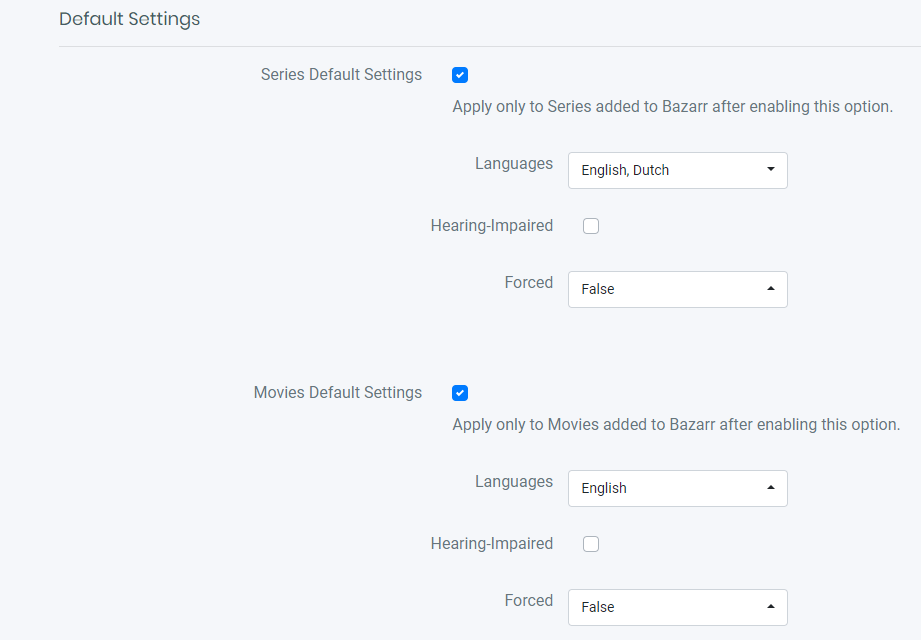

Setup Guide¶
After installation and starting up, you open a browser and go to http://ip_where_installed:6767 Before it works you need to add info for Sonarr and/or Radarr.
Sonarr¶
Settings => Sonarr
Host¶

Hostname or IP address¶
Enter the hostname or the IP address of the computer running your Sonarr instance.
Be aware that when using Bazarr in docker, you cannot reach another container on the same Docker host using the loopback address (ex.: 127.0.0.1 or localhost). Loopback address refer to the Bazarr Docker container, not the Docker host.
Port Number¶
Enter the TCP port of your Sonarr instance. Default is 8989.
URL Base¶
Mainly used by those who expose Sonarr behind a reverse proxy (ex.: /sonarr). Don't forget the leading slash. In fact, it should look exactly the same as in Sonarr settings. Meanly used when you use a reverse proxy.
If you don't use a reverse proxy or don't know what it is leave this empty !!!
SSL enabled¶
Enable this if your Sonarr instance is exposed trough SSL. Not needed if you reach it with a local IP address.
API key¶
Enter your Sonarr API key here.
Click the
Testbutton after filling in all the fields. Make sure the test is successful before you proceed.
Options¶

Minimum Score¶
Select the minimum score (in percentage) required for a subtitles file to be downloaded. Are your subs often out of sync? Raise the score!
Download Only Monitored¶
Automatic download of Subtitles will only happen for monitored shows/episodes in Sonarr.
Excluded Tags¶
Episodes from series with those tags (case sensitive) in Sonarr will be excluded from automatic download of Subtitles.
In Sonarr you add a custom tag to a show, in this case the shows with these tags will be ignored by Bazarr. examples: dutch, anime
Excluded Series Types¶
Episodes from series with these types in Sonarr will be excluded from automatic download of Subtitles. Options: Standard, Anime, Daily
Path Mappings¶

You should only use this section if Sonarr and Bazarr use a different path to access the same episode file (.mkv). (for example if you run Sonarr on a different device then Bazarr or have a Synology and mix packages with Docker.)
IF YOU GOT THE SAME VALUES ON BOTH SIDES THEN YOU DON'T NEED IT !!! IT SHOULD ALSO BE REMOVED OR ELSE YOU WILL GET A ERROR.

Click on Add and you will get a popup window

Ex
- Browse or type the path for Sonarr:
/media/tv_shows/seriesX/ - Browse or type the path for Bazarr:
\\nas\tv\seriesX\
The common part of both path can be discarded and you should use those values:
- Path for Sonarr:
/media/tv_shows/ - Path for Bazarr:
\\nas\tv\
If everything runs on Docker you normally don't need to use this except if you got messed up paths and then it would be smarter to fix those first to have consistent and well planned paths.
Radarr¶
The same setup as you did for Sonarr except for the default Port Number: 7878
Languages¶
Settings=> Languages
Subtitles Languages¶

Single Language¶
We don't recommend enabling this option unless absolutely required (ie: media player not supporting language code in subtitles filename). Be aware the language code (ex.: en) is not going to be included in the subtitles file name when enabling this.
Recommended value is off
Enabled Languages¶
Select the languages you want to be able to use in Bazarr. This doesn't add any required languages to series or movies, it just filter out the language list everywhere in the UI to have a more readable drop-down.
Default Settings¶

Series Default Setting¶
Enable the automatic selection of desired languages for new series added after the activation of this option.
Languages-¶
Select the languages to be added to required languages for new series.
Hearing-impaired¶
Enable this to require hearing-impaired subtitles instead of standard ones.
Forced¶
Forced subtitle is the subtitle appearing on screen when the characters speak a foreign or alien language, or there is a sign, location, or other text in a scene.
-
Like Dothraki in Game of Thrones.
-
Star Trek when someone speaks Klingon.
Values:
- False: Search for normal subtitles.
-
True: Search for only forced subtitles. (keep in mind that forced subs aren't available in every languages and are hard to find).
-
Both: Search for normal subtitles and for forced subtitles.
Movies Default Setting¶
Same as for series.
Providers¶

Select the subtitles providers you would like to enable. it is best to select multiple providers and create/use a account with them especially when you got allot of wanted subtitles. Some subtitle providers requires a extra paid Anti-Captcha Service.
If possible don't forget to support them for their free service
Now wait till Bazarr gets all the info needed from Sonarr/Radarr.
And don't forget [[First time installation configuration]] !!!
If you still have questions please check the Troubleshooting section in the wiki. For more info about the other settings check the [[Settings]] wiki.